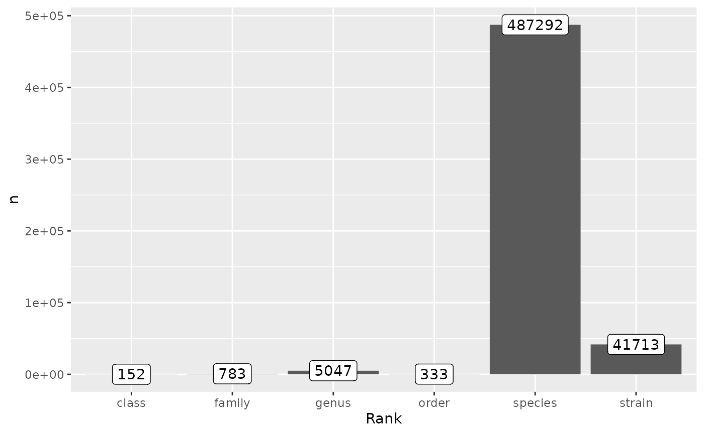

vignettes/articles/completeness-taxonomy.Rmd
completeness-taxonomy.Rmd
ncbi_taxonomy <- get_ncbi_taxonomy()
#> Registered S3 method overwritten by 'httr':
#> method from
#> print.cache_info hoardr
#> Extracting files...
#> Importing ranked lineage...
#> Importing nodes...
#> Registered S3 methods overwritten by 'readr':
#> method from
#> as.data.frame.spec_tbl_df vroom
#> as_tibble.spec_tbl_df vroom
#> format.col_spec vroom
#> print.col_spec vroom
#> print.collector vroom
#> print.date_names vroom
#> print.locale vroom
#> str.col_spec vroom
#> Combining ranked lineages and nodes...
ncbi_taxonomy
#> # A tibble: 548,240 × 11
#> kingdom phylum class order family genus species NCBI_ID Taxon…¹ Paren…² Rank
#> <chr> <chr> <chr> <chr> <chr> <chr> <chr> <chr> <chr> <chr> <chr>
#> 1 "" NA NA NA NA NA NA 2157 Archaea 131567 supe…
#> 2 "Archa… NA NA NA NA NA NA 1935183 Asgard… 2157 clade
#> 3 "Archa… NA NA NA NA NA NA 2798909 Candid… 1935183 phyl…
#> 4 "Archa… Candi… NA NA NA NA NA 2798916 Candid… 2798909 class
#> 5 "Archa… Candi… Cand… NA NA NA NA 2798922 Candid… 2798916 order
#> 6 "Archa… Candi… Cand… Cand… NA NA NA 2798928 Candid… 2798922 fami…
#> 7 "Archa… Candi… Cand… Cand… Candi… NA NA 2798934 Candid… 2798928 genus
#> 8 "Archa… Candi… Cand… Cand… Candi… Cand… NA 2798940 Candid… 2798934 spec…
#> 9 "Archa… Candi… NA NA NA NA NA 2799004 unclas… 2798909 no r…
#> 10 "Archa… Candi… NA NA NA NA NA 2799005 Candid… 2799004 spec…
#> # … with 548,230 more rows, and abbreviated variable names ¹Taxon_name,
#> # ²Parent_NCBI_ID
ranks <- c(
'strain', 'species', 'genus', 'family', 'order', 'class', 'phyum', 'kingdom'
)
ncbi_counts <- ncbi_taxonomy |>
dplyr::filter(Rank %in% ranks) |>
count(Rank)
rank_levels <- sort(ranks[ranks %in% ncbi_counts$Rank])
ncbi_counts |>
mutate(Rank = factor(Rank, levels = rank_levels)) |>
ggplot(aes(Rank, n)) +
geom_col() +
geom_label(aes(label = n))
## Only datasets imported with the physiologies function
phys <- map(physiologies(), as_tibble)
bugphyzz_taxids <- phys |>
map(~.x$NCBI_ID) |>
unlist(recursive = TRUE) |>
as.character() |>
unique()
ncbi_ids <- import_ncbi_ids()
output <- vector('list', length(ncbi_ids))
names(output) <- names(ncbi_ids)
for (i in seq_along(output)) {
output[[i]] <- unique(intersect(bugphyzz_taxids, ncbi_ids[[i]]))
}
map_dbl(output, ~ length(.x) / length(bugphyzz_taxids) * 100) |>
{\(y) sort(y, decreasing = TRUE)}()
#> exclude_uncultured all_ids
#> 98.15661 95.68585
#> exclude_unclassified exclude_unclassified_uncultured
#> 88.90868 88.66858
#> exclude_all exclude_informal
#> 60.41360 60.41360
#> exclude_unclassified_informal exclude_uncultured_informal
#> 60.41360 60.41360It seems that excluding uncultured taxids would give the highest completeness values while still keeping the lowest number of taxa
uncultured_taxids <- ncbi_ids$exclude_uncultured
ncbi_taxonomy_remove_uncultured <- ncbi_taxonomy |>
filter(NCBI_ID %in% uncultured_taxids)
ncbi_counts_remove_uncultured <- ncbi_taxonomy_remove_uncultured |>
dplyr::filter(Rank %in% ranks) |>
count(Rank)
rank_levels_2 <- sort(ranks[ranks %in% ncbi_counts_remove_uncultured$Rank])
ncbi_counts_remove_uncultured |>
mutate(Rank = factor(Rank, levels = rank_levels_2)) |>
ggplot(aes(Rank, n)) +
geom_col() +
geom_label(aes(label = n))